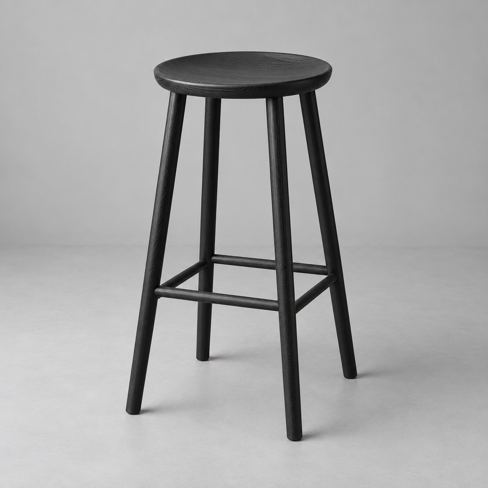

Products
Stock
- In stock
- Out of stock
- Low stock
- Slow-moving
Logistics
A large-item shipment is running late
Hamburg route · ETA Nov 14
+32Reorders
Dial Swivel Stool
Forecast 100+ · On hand 13ProductMakerVolume LOn handDemand
A large-item shipment is running late
Hamburg route · ETA Nov 14
+32